我发誓不论何时何地只要有人类遭受苦难和屈辱，我绝不会保持缄默，我们必须有选择的立场，中立只是帮助迫害者而绝不是帮助受害者，沉默向来只是鼓励了刽子手而不是牺牲者。
——诺贝尔得主 艾勒越伊作
在国产的青春片里，我最讨厌看到的就是堕胎的情节。
堕胎好像成为一个女孩了解爱情、走向成熟、认识人生的必经环节。
甚至，堕胎成为此类电影博取观众眼球、制造故事起伏、刻画伤感青春的工具。
可是！对生命没有敬畏，这些导演又懂什么青春呢。
更加可悲的是，不仅这些反人道的电影大行其道，在真实的生活里，无痛人流的广告遍地都是，谈到堕胎，中国人的坦率程度令人后背发凉。
一个朋友在美国留学时，有一次老师让他们每个人任选话题做演讲。
一位中国同学讲的内容是介绍如何作科研项目。
他用女性怀孕后的选择来作比喻，讲一个女的通常会如何如何选择生下孩子或是堕胎，科研选题也是如何如何。
老师不等他说完，立即打断，让他不要用这种比喻，非常失礼。
......
他不知道大孕周堕胎在很多国家是被禁止的，反对堕胎也是各大宗教的一致共识。
正是像他这种对胎儿的轻慢，在中国，每年有1300万左右的婴儿因流产而死亡！
但是绝大多数中国人不会承认这是一种罪恶，因为他们认为孩子只有生下来才算是一条生命。
这是何等的无知！
所以，今天必须要向大家普及国家地理拍摄的高分纪录片《子宫日记》。
我们将通过4D动态立体扫描科技以及动画了解子宫里发生的奇迹。
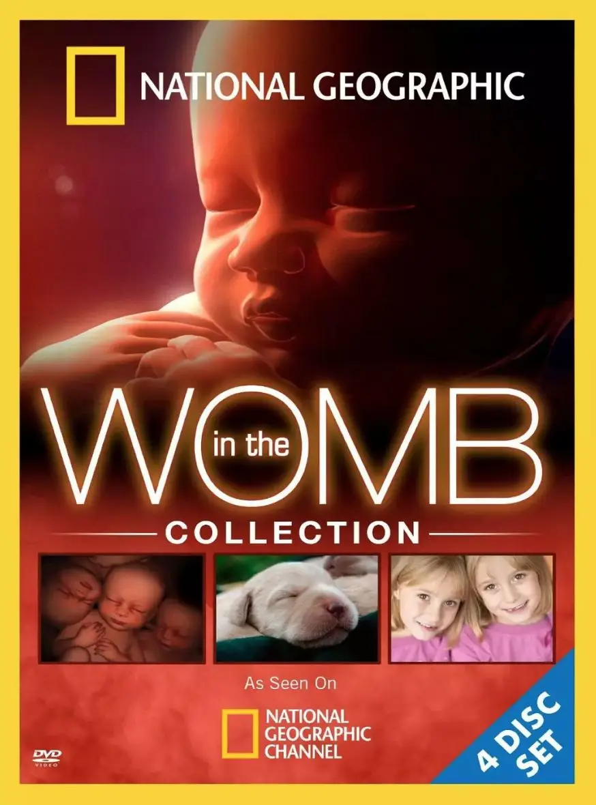
-01- 神奇的相遇
当父亲在母亲的体内射精后，将会产生五亿个载有父亲基因密码的精虫。
而精虫是人体中最小的细胞，并且行走缓慢，一分钟只能前进三毫米。
他们的目标就是要找到等待他们的卵子。
奇妙的是，卵子是人体中最大的细胞，并且母亲一个月只排一个卵子。
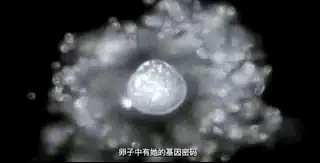
这五亿个精虫将要冒险通过子宫口、穿过子宫颈，找到卵子。
但是幸运儿只有一个，当最强健、速度最快的精虫首次进入卵子时，卵子薄膜立刻会发生变化，其他精子将再也进不去。
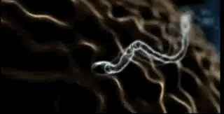
这是何等的奇妙！
至今，精虫是如何找到路径游向卵子仍然是一个未知的谜。
-02- 奇迹般的成长
当两个细胞核融合在一起后，就形成了受精卵。
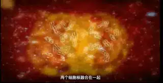
这个新生命独一无二的DNA就此创建，这是一个在人类历史上从未存在也不会被复制的个性签名。
这要比人类任何一项加密技术都要先进。
DNA里甚至包含了人类永远难以想象的算法技术，在某种化学指令下排列而成的DNA将会决定孩子将来的方方面面，包括长相、性格和喜好。
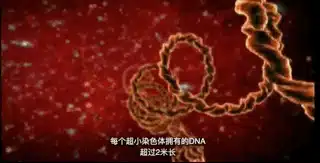
接着受精卵会游向一个安全的地方并安营扎寨，因为接下来这个干细胞将要开展一个比人类历史中任何一个工程都要精细、奇妙一万倍的项目。
他们将用最先进的生物技术、最周密的算法以及最高效率的生产方式把自己打造成一个有意识、有感觉、自给自足的生命。
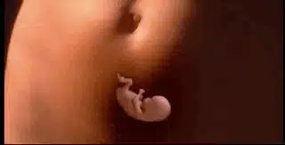
一天后，受精卵首次发生分裂，并不断复制，4-5天后将会出现一百个细胞。
1周后，干细胞会演变出两百多种细胞。
这些细胞形成的球状囊胚外围是胎盘，内部是胚胎。
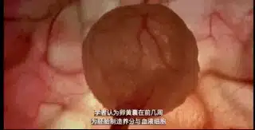
3周后，他们会在子宫着床，开始从母体的血液里汲取营养。
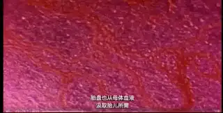
慢慢的，一个细胞开始自动收缩，心脏逐渐出现。
它将会为你跳动30亿-40亿次！
四周后，它还没有蚕豆大，成长速度也非常慢，每天只增长一毫米。
6周后，它将面临最严峻的挑战。
这段时间里将会决定他以后是会长成大猩猩、猪还是人。
因为只有1.5%的基因决定我们成为人类。
其他98.5%的基因和大猩猩一样，75%的基因和狗一样，50%的基因和果蝇一样，33%的基因黄水仙一样。
要不是上帝保守，这个比例下，我们想做个人还真有点难。
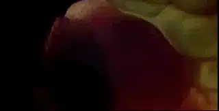
一个异物长大，正常情况下，我们身体的免疫系统会进行干涉。
但是婴儿的成长不但没有被阻拦，甚至会得到母亲身体全方位的支持。
这得益于吸附在子宫壁上的胎盘，胎盘不仅可以帮助它吸取母亲的营养，还可以过滤有害物质。
更加神奇的是，它会制造某种荷尔蒙，这种荷尔蒙会防止母体内的免疫系统排斥体内异物成长。
这也是部分怀孕早期的妈妈为什么会觉得恶心的原因。
9周的时候，胚胎布满神经，平均每分钟会制造250万个神经元，这生产效率秒杀人类最先进的工厂。
神经开始抽动，并刺激肌肉发育，强化关节，手脚慢慢开始出现。
11-12周的时候婴儿已经会踢脚，并且会把子宫壁当弹簧垫进行运动。
脑部也慢慢产生，并逐渐控制神经和心跳，婴儿也就有了触觉。
16周的时候，他自己已经可以识别身边的空间，有立体的感觉。
24周的时候，宝宝已经有了各种感觉，即使早产，也可以存活。
.......
38周内，宝宝从单细胞发育成2百万种的上兆细胞。
在子宫里胎儿还会微笑，认得母亲的声音，甚至会做梦。
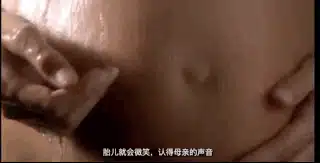
最奇妙的是，在正式离开子宫之前，宝宝在外面世界需要用到的所有生存技能都已经具备了。
在子宫里，宝宝会不停的吮吸手指、吸食羊水。
这样，宝宝会形成吮吸的条件反射，只要是碰到像乳头一样的东西，宝宝就会去吮吸。
而妈妈的奶水里有着熟悉的羊水的味道，宝宝更喜欢去吮吸奶水。
试想一下，如果宝宝出生不会吃奶，那将会是一件多么可怕的事情。
肺部是宝宝最后长好的器官，有了它，宝宝出生后，可以呼吸空气维持生存。
所以，当肺部长好后，宝宝就要准备离开舒适又黑暗的子宫了。
发育好的肺部会分泌出一种蛋白质，这种蛋白质通过羊水会刺激母亲分泌一种荷尔蒙。
而这种荷尔蒙不仅能催生，还有减缓记忆的作用。
宝宝仿佛已经预知了妈妈将要承受的痛苦，所以特意分泌了这种神奇的物质。
当宝宝生下来后，妈妈会很快忘记刚才经历的痛苦，尤其是当听到孩子的啼哭时，作为妈妈的喜悦和幸福会立马从心底里涌上来。
孩子在子宫里与妈妈建立的那种人类难以穷尽的生死相连和默契将会催生出最伟大的母爱。
那种爱没有条件，母亲会完全接受自己的孩子，那种爱将会打破人类的自私法则，会让母亲甘心为孩子牺牲自己的一切！
这个奇迹中有着创造生命的上帝对人类之爱的影子。
我们不能完全明白，却能够从中窥见永恒之爱的浩瀚和奇妙。
光是母爱就可以温暖无数人的心，给予无数人前进的动力，更何况上帝的爱呢！
他爱我们到一个地步，不惜将自己的独生子挂在十字架上，被凌辱、被唾骂、被定死。
这样的爱难道还不能征服铁石心肠的我们！！
.......
活在罪恶中的我们不仅无视上帝的爱，更将罪恶之手伸向了子宫里的婴孩。
我们拿着铁钳子伸入子宫将宝宝的脑袋、四肢夹碎。
然后用铁具将残骸从子宫里刮出，白色的脑浆从妈妈的身体中流出、清澈的眼睛浸满了血丝......
曾经在子宫里发生的无数奇迹就被我们这么残暴地毁灭了。
那些视堕胎为平常的父母，你真的敢对着小孩七零八落的尸骨，摸着良心对自己说：对，这只是一团肉，还不是生命......
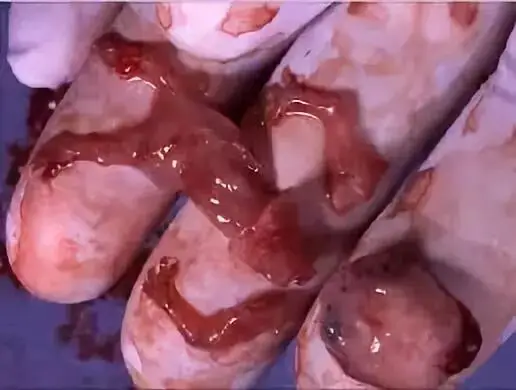
我想，大多数堕胎的母亲都不敢去看，不敢去想。
只是在自欺里安慰自己，我也不想这样，这是一场意外。
在短纪录片《无声的尖叫》里，一个女人堕胎只花了一分钟，当事情结束后，她穿衣服的时候，无意中看到了躺在血泊里的婴儿，她立马哭了，原来她杀了她的孩子。
从此，这个母亲活在一生的悲痛和阴影里。
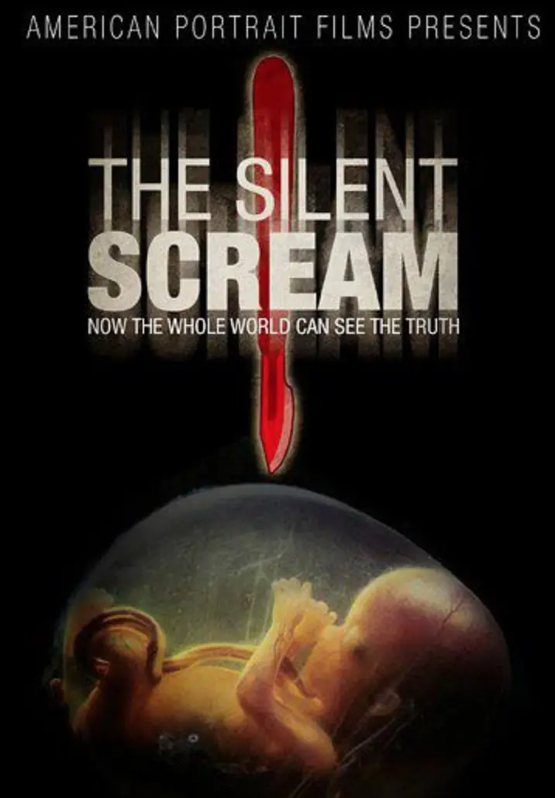
堕胎带给母亲的不仅是巨大的心理阴影，更是身体上难以预估的伤害，很多女性因为堕胎落下终身的疾病，甚至无法再次怀孕。
| 在线观看《无声的尖叫》
这样的罪恶，不仅仅归咎于母亲。
这是从个体到社会到更大的组织进行的联合绞杀。
有人不负责任，有人缺乏性常识，所以有了意外。
有了意外，就有了别人的眼光和说三道四。
有了羞辱，就想要静悄悄地把意外处理掉。
正好，无痛人流的广告遍地都是。
有了生意，就有了利益。
为了利益，医生敢昧着良心说这一点也不痛，对母亲身体的影响微乎其微。
吃到了甜头，那就地毯式铺广告吧，每天最好堕掉一百个孩子。
面对这么大的利益链条和如此普遍的罪恶，媒体沉默了。
从来都没有看到类似的报道，所以，无知的继续无知，捞钱的继续捞钱，受伤的继续受伤。
所有的一切，都在默默的发生！
可是，他们不知道，这都在上帝的眼里。
.......
环境也许没法改变。
或者我们就不应该盯着环境愤愤不平却毫无行动。
我们首先要面对的是自己的良心和上帝。
当一位堕胎医生意识到子宫里发生的奇迹时，他痛悔：
本来以为自己做着高尚的工作，现在却变成了杀手.....我宁愿失去自己的生命，也不愿意再做一次堕胎手术。
因为信仰和良心自由，有父母即使知道孩子是残疾，却也坚持把孩子生了下来。
所以有了感动无数人的尼克·胡哲，他对生命的认识、对上帝的敬畏远高于我们这些健康的人。
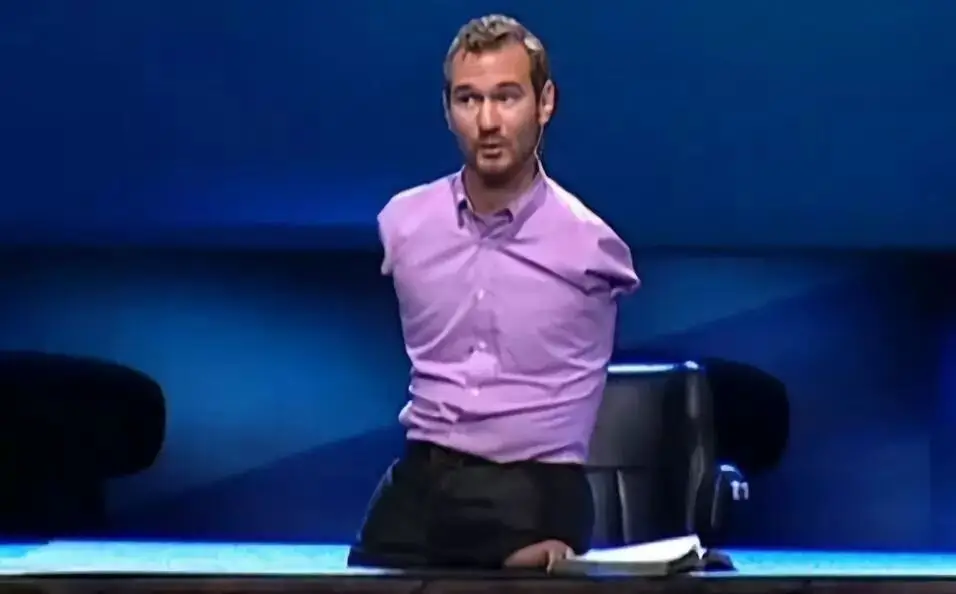
有人怀孕但养不起孩子，想要堕胎，但教会鼓励了这对夫妻，并陪伴这个家庭一起度过难关，一起面对嘲笑和拮据的生活，这就是美好的见证。
当从个体良心到群体责任形成良性的互动时。
就像子宫里发生的奇迹一样，一个可以孕育生命和希望的干细胞就产生了，终有一天一个真正敬畏生命和上帝的国家会出生。
| 尼克·胡哲的震撼演讲
关注并回复：子宫日记
获取电影资源
相关推荐：
100双绝望的眼睛
像猪一样活着，像猪一样死去 !
唱的不合拍，那你就闭嘴！
奥斯卡影帝，你把自己演死了
73年过去了，纳粹离我们有多远？
这里没有挑逗你眼目情欲的小鲜肉
也没有挑动你肉体情欲的段子
更没有膨胀你今生骄傲的鸡血
我们只在乎那些最质朴真诚的作品
在那里我们才能恢复真正的想象力
我们也坚信这才是我们真正需要的

ID:Six_hundred_hits
长按二维码，一键关注
【六百击】
-END-
电影评论
尽情分享朋友圈

苹果打赏
通道
小提示：文末广告是腾讯配送广告，内容与本号无关，但您的每次点击（无需反复点）都会给平台带来几毛收益，欢迎您点击支持六百击